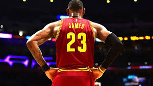
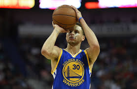
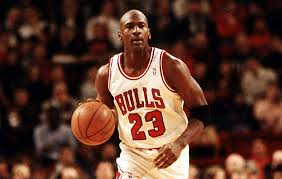
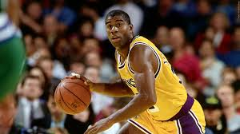
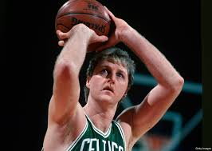
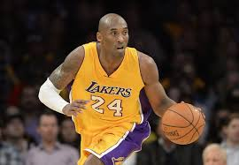
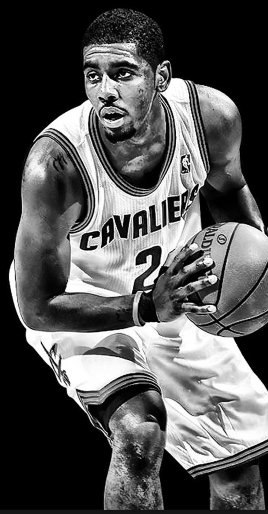

NBA Trivia Game
      
test
2:00
Start
Answer 20 Questions in 2 minutes
1) Michael Jordan was drafted third overall in 1984. Which two players were selected ahead of him?
Sam Bowie & Hakeem Olajuwon
Patrick Ewing & Hakeem Olajuwon
Charles Barkley & Hakeem Olajuwon
Karl Malone & Sam Bowie
2) What year was the National Basketball Association first established?
1935
1946
1958
1962
3) What year did the NBA-ABA merger occur?
1970
1968
1972
1976
4) Who is the only coach to win both a NCAA and NBA championship?
Phil Jackson
Steve Kerr
Larry Brown
Chuck Daly
5) Who was the first African American to play in an NBA game?
Earl Monroe
Wilt Chamberlin
Bill Russel
Earl Lloyd
6) Which NBA team has the most championships?
Los Angeles Lakers
Chicago Bulls
Boston Celtics
Houston Rockets
7) Which player has scored the most points in the NBA?
Michael Jordan
Kobe Bryant
Karl Malone
Kareem Adul Jabar
8) In what city did the Los Angeles Lakers originally play in?
San Diego, California
Detroit, Michigan
Minneapolis, Minnesota
Rochester, New York
9) Wilt Chamberlain once scored 100 points in a game. Which player has the second-highest total points in a single game?
Michael Jordan
Kareem Abdul Jabbar
Adrian Dantley
Kobe Bryant
10) Who guarded Michael Jordan when he made his buzzer-beater against Cleveland in the 1989 playoffs?
Bryon Russell
Craig Ehlo
Joe Dumars
Charles Barkley
11) How long is a regulation NBA game?
40 Minutes
100 Minutes
48 Minutes
60 Minutes
12) Has a player ever averaged a triple-double for an entire season?
Yes
No
13) How many seconds does an NBA team get to shoot?
60 Seconds
35 Seconds
30 Seconds
24 Seconds
14) Which player did NOT have a father who also played in the NBA?
Lebron James
Luke Walton
Klay Thompson
24 Stephen Curry
15) Which player inspired the NBA logo?
Wilt Chamberlin
Bill Walton
Michael Jordan
Jerry West
16) What were the New Orleans Pelicans previously called?
Sea Lions
Royals
Hornets
Rockets
17) In what season did the NBA adopt the 3-point shot?
1969-70
1979-80
1956-57
1965-66
18) What was the late NBA player Darryl Dawkins’ nickname?
All-World
Dunk'in Donut
The Pearl
Chocolate Thunder
19) What former NBA player became famous for marketing a brand of $15 sneakers?
Stephon Marbary
Stephen Curry
Michael Jordan
Kobe Bryant
20) How long does an NBA team have to get the ball across the midcourt line?
8 Seconds
5 Seconds
10 Seconds
24 Seconds
Score
Correct:
0
Incorrect:
0
Unanswered:
0